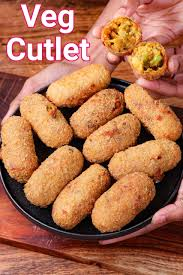

Veg Cutlet

Veg Cutlet is a healthy, delicious, and crispy snack made with mixed vegetables, spices, and breadcrumbs. It’s a popular Indian snack that can be served as an appetizer or tea-time snack.
Ingredients:
- 1 cup boiled potatoes (mashed)
- 1/2 cup mixed vegetables (carrot, beans, peas, etc.)
- 1/4 cup breadcrumbs (for coating)
- 1 onion (finely chopped)
- 2 green chilies (finely chopped)
- 1 teaspoon ginger-garlic paste
- 1/2 teaspoon red chili powder
- 1/4 teaspoon garam masala
- 1/2 teaspoon turmeric powder
- 1 tablespoon fresh coriander leaves (chopped)
- Salt to taste
- Oil for frying
Instructions:
-
Prepare the mixture:
- Boil the mixed vegetables and mash them along with boiled potatoes.
- Heat oil in a pan, add chopped onions, green chilies, and ginger-garlic paste, and sauté for a minute.
- Add the mashed vegetables, red chili powder, turmeric powder, garam masala, and salt. Cook the mixture for 5-6 minutes on low heat, stirring occasionally.
- Allow the mixture to cool and add chopped coriander leaves. Shape the mixture into cutlet patties.
-
Coat and fry the cutlets:
- Coat each cutlet with breadcrumbs.
- Heat oil in a pan and fry the cutlets on medium heat until they are golden brown and crispy on both sides.
Serving:
Serve the Veg Cutlets hot with green chutney, tamarind chutney, or ketchup. They can be served as a snack or appetizer at parties or gatherings 😊.